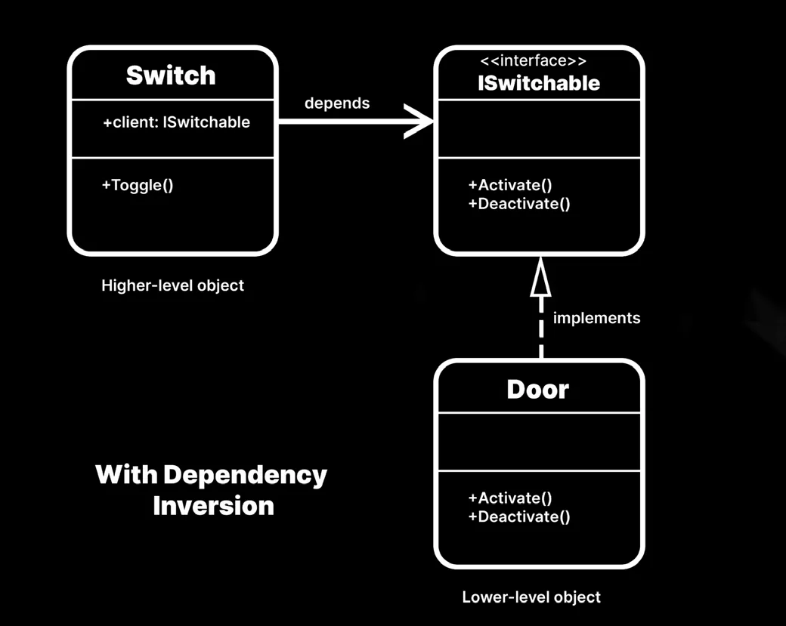
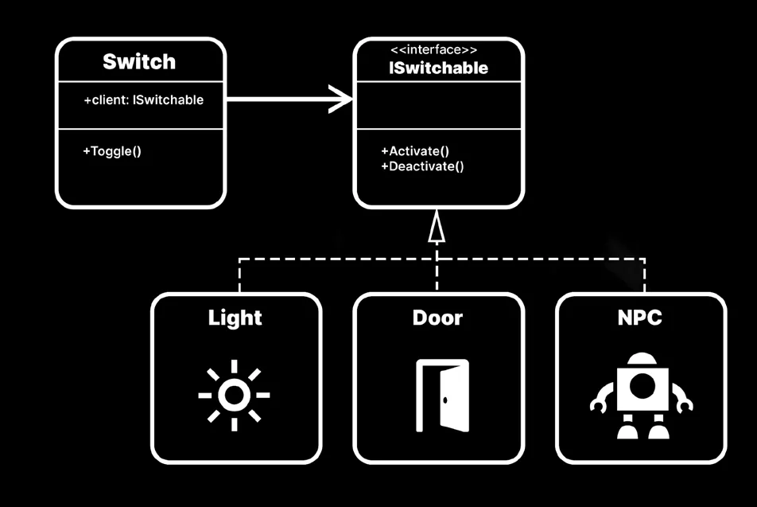
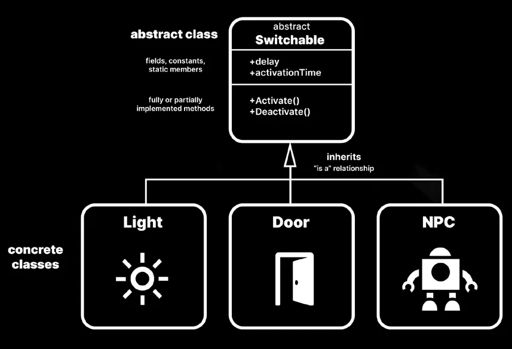
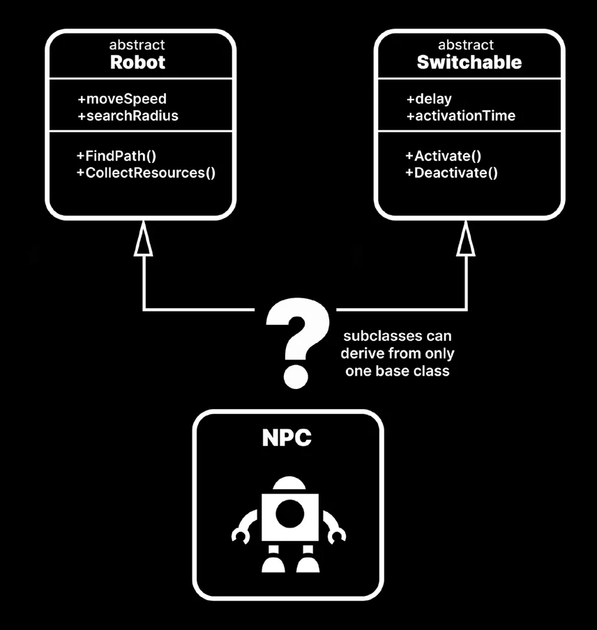

public class Switch : MonoBehaviour
{
public Door door;
public bool isActivated;
public void Toggle()
{
if (isActivated)
{
isActivated = false;
door.Close();
}
else
{
isActivated = true;
door.Open();
}
}
}
public class Door : MonoBehaviour
{
public void Open()
{
Debug.Log("The door is open.");
}
public void Close()
{
Debug.Log("The door is closed.");
}
}Switch 可以调用 Toggle 方法来打开和关闭门。这能行得通，但问题在于有一条依赖被直接从 Door 接入了 Switch。如果 Switch 的逻辑需要作用于 Door 之外的东西呢——比如去激活一盏灯或一个巨型机器人？
你可以在 Switch 类里追加一些额外的方法，但那样就违反了开闭原则（open-closed principle）。每次想扩展功能，你都得修改原有的代码。
抽象又一次来救场了。你可以在两个类之间夹入一个名为 ISwitchable 的接口（interface）。

ISwitchable 只需要一个公共属性来判断它当前是否处于激活状态，再加上一对用来 Activate 和 Deactivate 它的方法。
public interface ISwitchable
{
public bool IsActive { get; }
public void Activate();
public void Deactivate();
}另一方面，你需要改造 Door，让它实现 ISwitchable：
public class Door : MonoBehaviour, ISwitchable
{
private bool isActive;
public bool IsActive => isActive;
public void Activate()
{
isActive = true;
Debug.Log("The door is open.");
}
public void Deactivate()
{
isActive = false;
Debug.Log("The door is closed.");
}
}然后 Switch 就变成这样：它依赖一个 ISwitchable 客户端，而不再直接依赖一扇门。
public class Switch : MonoBehaviour
{
public ISwitchable client;
public void Toggle()
{
if (client.IsActive)
{
client.Deactivate();
}
else
{
client.Activate();
}
}
}现在你已经把依赖倒置过来了。接口在两者之间建立了一层抽象，而不是把开关死死焊在门上。Switch 不再直接依赖门特有的方法（Open 和 Close），转而使用 ISwitchable 的 Activate 和 Deactivate。
这个微小却重要的改动提升了可复用性。以前 Switch 只能和一扇 Door 配合，现在它能与任何实现了 ISwitchable 的东西配合。
这样一来，你就可以做出更多能被 Switch 激活的类。无论是活板门还是激光束，高层的 Switch 都能照常工作。它只需要一个实现了 ISwitchable 的兼容客户端。

和 SOLID 的其余原则一样，依赖倒置原则要求你审视自己平时是如何搭建类与类之间关系的。借助松耦合（loose coupling），你可以从容地扩展项目。
接口与抽象类
为了贯彻「组合优于继承（composition over inheritance）」的理念，本指南中的许多示例都使用了接口。不过，你也可以用抽象类（abstract class）来遵循其中的许多设计原则与模式。
两者都是在 C# 中实现抽象的有效方式。具体用哪一个，取决于你当前的情境需求。
抽象类
abstract 关键字让你可以定义一个基类，从而通过继承把通用的功能（方法、字段、常量等）传递给子类。

抽象类的优势在于，它可以拥有字段和常量，也可以拥有静态成员。它还能使用限制更严的访问修饰符，比如 protected 和 private。与接口不同，抽象类允许你实现逻辑，从而在具体的类之间共享核心功能。
继承用起来很顺手，直到你想创建一个同时具备两个不同基类特征的派生类。在 C# 里，你不能从多个基类继承。
你不能直接实例化抽象类，而必须派生出具体的类。
在前面的例子里，抽象类也能达成同样的依赖倒置，只是走了另一条路。与其使用接口，你可以让具体的类（例如 Light 或 Door）派生自一个名为 Switchable 的抽象类。
如果你的游戏里还有一个统辖所有机器人的抽象类，那么该从谁派生就更难抉择了：用 Robot 还是 Switchable 作为基类？
接口
正如接口隔离原则中所见，当某些东西无法整齐地套进继承范式时，接口能给你更大的灵活性。借助「has a」（有一个）关系，你可以更方便地挑选和组合。
不过，接口只包含其成员的声明。真正实现该接口的类要负责把具体的逻辑补全。
因此，这并不总是一道非此即彼的选择题。在你希望共享代码的地方，用抽象类定义基础功能；在你需要灵活性的地方，用接口定义外围的能力。
在基类之间做选择
在这个例子里，你可以让 NPC 派生自 Robot 基类以继承其核心特性，然后再用一个接口 ISwitchable 为 NPC 增添开关能力。

记住：一个类最多只能继承一个抽象类，但可以实现多个接口。
请留意抽象类与接口之间的以下差异。
| 抽象类 | 接口 |
|---|---|
| 完全或部分地实现方法 | 只声明方法，无法实现它们 |
| 声明/使用变量与字段 | 只声明方法与属性（不能声明字段） |
| 拥有静态成员 | 不能声明/使用静态成员 |
| 使用构造函数 | 不能使用构造函数 |
| 可以使用所有访问修饰符（protected、private 等） | 不能使用访问修饰符（所有成员都隐式是 public） |
对 SOLID 的理解
熟悉 SOLID 原则靠的是日常练习。把它们当作写代码时要始终牢记的五条基本规则。下面是一份方便的回顾：
- 单一职责（Single responsibility）：确保类只做一件事，并且只有一个需要修改的理由。
- 开闭（Open-closed）：你应该能够扩展一个类的功能，而不改动它已有的行为。
- 里氏替换（Liskov substitution）：子类应当可以替换其基类。
- 接口隔离（Interface segregation）：让接口保持简短、方法少。客户端只实现自己需要的东西。
- 依赖倒置（Dependency inversion）：依赖抽象，不要让一个具体的类直接依赖另一个具体的类。
SOLID 原则是一套指导方针，帮助你写出更整洁的代码，让维护和扩展更高效。近二十年来，SOLID 原则在企业级软件开发的设计中一直占据主导地位，因为它们非常适合那些必须规模化的大型应用。
在某些情况下，遵循 SOLID 会带来前期的额外工作量。你可能需要把一部分功能重构为抽象或接口。不过，长期来看往往能收获回报。
至于在你的项目里要多严格地应用这些原则，由你自己决定；它们并非绝对。其中存在许多细微之处，每种原则也有多种实现方式，本文并未一一覆盖。记住：原则背后的思考，比任何具体语法都更重要。
拿不准该怎么用的时候，回头看看 KISS 原则。保持简单，不要只是为了用而硬把这些原则塞进脚本里。让它们在真正需要时自然而然地融入你的代码。
想了解更多内容，请务必观看 Unity 在 Unite Austin 上的 SOLID 演讲。